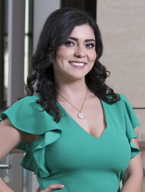

Odont. Dayana
Durón Rivas

Salud y belleza en equilibrio
Lograr una sonrisa bella y armoniosa es sólo una de las aplicaciones de la ortodoncia, la especialista Dayana Durón Rivas habló sobre este amplio campo de la odontología
Redacción BS
edicionrevistabs@gmail.com
La posición incorrecta de los dientes o de la mordida puede tener consecuencias como desgaste de las piezas dentales, e inclusive otras aparentemente no relacionadas con la dentadura, como las migrañas, de ahí la importancia para los especialistas en ortodoncia de logar una alineación dentaria funcional y estética.
“El tratamiento temprano, derivado de un diagnóstico oportuno, permite corregir problemas de crecimiento y desarrollo maxilofacial, así como problemas dentales de apiñamiento, mordida cruzada, inclinaciones dentales, que al ser tratados se puede evitar ciertas deformidades maxilares”, explicó en entrevista con Revista BS Dayana Durón Rivas.
La especialista en ortodoncia y ortopedia maxilofacial señaló que la infancia es la mejor etapa para guiar el crecimiento y corregir deformaciones, por ello es importante que los padres aprendan a identificar síntomas o condiciones que requieren atención desde ortodoncia: si el niño ronca, si la mandíbula se ve muy atrás o muy enfrente, si se chupa el dedo o si la posición de los dientes no es la ideal.
“Mi consejo es que la primera visita al ortodoncista se realice antes de los 6 años de edad, para detectar posibles problemas de desarrollo dental antes de la erupción de los dientes permanentes, así como problemas de hábitos bucales y respiración bucal que nos pueden afectar durante el crecimiento”, destacó.
Su labor
El campo de acción de la ortodoncia es amplio, comprende, además de la estética dental, tratamientos integrales para corregir todo tipo de maloclusiones, preparación para cirugía ortognática, atención a problemas en la articulación temporomandibular, pacientes con labio y paladar fisurado, entre otros.
La ortodoncia con alineadores removibles es uno de los avances de su campo que destacó la especialista, pues además de ser una opción cómoda al usuario, permite resultados más predecibles debido a que la planeación se realiza digitalmente.
Como recomendación, la profesional señaló que cuando se está en tratamiento de ortodoncia se deben reforzar los hábitos de higiene, el proceso de limpieza debe incluir, además del cepillado, el uso de hilo dental y enjuagues bucales.
“La ortodoncia no sólo cumple objetivos para que los dientes se vean lindos y derechos, sino que debe existir función, estabilidad y excelente salud periodontal para lograr casos exitosos”, finalizó Dayana Durón.